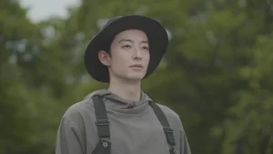
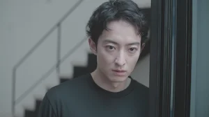
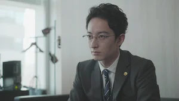
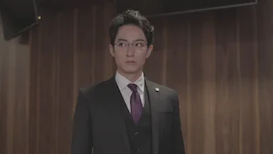
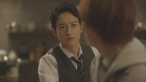
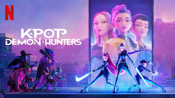
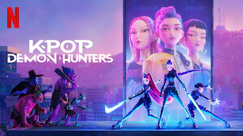

Endless entertainment starting at ₹149
Episode
More To Watch
Plans
Love Is A Poison
2024 12 Episodes U/A 13+ Romance
An elite but socially awkward lawyer takes in a genius con artist. Together, they secretly solve complex legal cases using unethically obtained evidence.
Starring: Shogo Hama, Katsumi Hyodo, and Kogaken
Episodes

1.Episode 1
After meeting a young man named Haruto, elite lawyer Shiba can't stop thinking about him. He goes camping to clear his mind — but runs into Haruto.

2.Episode 2
Shiba begrudgingly allows Haruto to stay with him but is impressed by his cooking. Later, as Shiba struggles with a case, Haruto offers to help.
3.Episode 3
Shiba and Haruto team up on the court case between the influencer and the advertising agency. After the trial, Haruto asks Shiba for a reward.
4.Episode 4
When a start-up company asks Shiba to prevent a whistleblowing incident, Haruto goes undercover to get close to the potential informer.

5.Episode 5
Unable to focus on an urgent new project, Shiba holes up in his office and tries to push Haruto out of his mind — but Haruto soon arrives with food.
6.Episode 6
Shiba learns that the police are closing in on the criminal group Haruto belongs to. Later, a young man tells him of Haruto's true character.

7.Episode 7
Haruto asks Shiba to take him to a hot springs resort now that they're a couple. Kazama is excited for them, but Shiba can't help but feel anxious.
8.Episode 8
Asked to attend a party in his boss's stead, Shiba brings Haruto to the event. There, they encounter a tech company CEO who recognizes Haruto.

9.Episode 9
As Shiba and Haruto struggle to obtain the testimony they need to expose the land developer's illegal actions, Hachisuka appears before them.

10.Episode 10
When Shiba’s law office receives an anonymous letter denouncing Haruto as a criminal, he must make a decision: cut ties with Haruto, or quit his job.
Watch offline
Available to download
Geners
Romantic TV Dramas, TV Dramas, Courtroom TV Shows, Japanese, and TV Shows Based on Books
The Show is ...
Romantic, Drama, LGBTQ+, Courtroom, Japanese, Based on a Book, Con Game, and TV
Audio
Japanese [Original]
Subtitles
English, Japanese
Cast
Shogo Hama, Katsumi Hyodo, Kogaken, Aoba Kawai, Ikuji Nakamura, and Noserin
You Might Also Like
 
